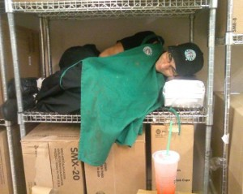

Submitted on Tue, 08/12/2014 - 5:55pm
 By the IWW Starbucks Workers Union
By the IWW Starbucks Workers Union
Company Enriches Shareholders While Maintaining Inadequate Working Conditions
NEW YORK, NY - The Industrial Workers of the World, Starbucks Workers Union released a report today, “Low Wages and Grande Profits at Starbucks” with an analysis of company performance over the last decade. The report describes how Starbucks has dramatically improved profitability at the company since the Great Recession of 2008-2009, and that the company has enriched shareholders at the expense of its nearly 200,000 workers.
Submitted on Thu, 11/07/2013 - 4:59pm

From StarbucksUnion.org
Starbucks CEO Howard Schultz likes to play the good guy. He asked us to "come together" to pressure Washington to make a budget deal, raise the debt ceiling, and end the government shutdown. But when it comes to his own workers, its a different story. Across the world, Starbucks pays its 100% part-time barista workforce poverty wages, and busts unions when workers "come together" for change, even while raking in over $1.7 billion in profits this year. Right now, Starbucks baristas are on strike in Chile, where they make less per hour than the price of a cup of coffee.
Click HERE to sign the petition for striking baristas of Sindicato Starbucks Coffee Chile, factory workers making Starbucks cups at Pactiv & baristas all over the world
Submitted on Sun, 01/20/2013 - 4:05pm
On December 17, Starbucks Coffee abruptly informed "shift supervisors," also known as shifts, in MA that they would no longer receive any income from customers' tips as of January 7. Shift supervisors have extra responsibilities, but start at just $11/hr. The loss of tips represents a cut of up to 10-20% of their income! Shifts comprise roughly one third of Starbucks' MA workforce. The company has said it will not provide any immediate raise to make up for the effective salary cut, and that any future increase shifts may receive won't be retroactive. For years, Starbucks has essentially arranged for customers to subsidize shifts' low pay with tips, but the MA courts have ruled this illegal.
Shifts are demanding that their huge, profitable employer ensures no Starbucks worker loses income from the court ruling on tips. They want a $4/hour raise, and transparency from the company, which has been maddeningly opaque in its dealings with employees, refusing to say anything about any possible raise until a petition link shifts called attention to their plight.
Submitted on Sat, 04/28/2012 - 12:44pm
By liberte Locke - April 11, 2012
I drag my broken jittery body home through the maze of late night construction New York City subways. I finally reach my quiet apartment where the only ones up are our three cats screaming for food and persistently walking just where I’m trying to walk. Tonight I manage to not step on them but usually, in this state, I can’t help it. I apologize with head-pettings and catnip. I feed the cats and then remember that I spent my entire lunch break at work chain smoking away that last extremely rude customer I had before clocking for my break instead of eating the ramen noodles that I brought. I open the fridge and realize that every meal possible would take way more work than I have in me so I close the door.
I go to the bathroom and while peeing set my alarm on my phone. This is a ritual. I’ve learned in the past that it is completely possible after a closing shift that I may just fall asleep in the bathroom. And if not the bathroom, maybe while sitting up trying to eat a late meal or laying on the couch watching tv. So setting my alarm as soon as I get home is crucial. Being late to work when I’m targeted by management (because of being a union organizer) is not an option, ever.
I’m awake enough from all the caffeine I consumed at my job, Starbucks, that I don’t fall asleep in the bathroom but I do spend ten minutes fumbling brainlessly through the clean laundry I didn’t have time to put up. I’m looking for something loose to sleep in – it takes so long because twice I forget entirely why I’m digging through the bag and I start putting laundry up thinking that is what I what I meant to be doing. I then suddenly stop, thinking to myself, “it’s too late for this, I’m exhausted. Go to bed. Go to bed.” I finally change and go into the living room to watch tv.
I already know that going straight to bed, no matter how tired I am, won’t work. I have to turn off my brain first. Without some distraction my brain will just fill will endless To-Do lists. My responsibilities pile up. All the things I need to get done combine with what I’d like to get done. I’m filled with regret for what I was unable to get done with my day because of having work and then being too exhausted to do anything else. I’m so tired that petty concerns really consume me. I think and re-think about Facebook status updates to reflect my exhaustion and busyness just praying that all the crucial folks will see it and realize why I haven’t returned their phone calls, emails, or finished my deadlines for different projects. These lists go on and on but I’m too tired to even hold a pen to write the lists down.
Submitted on Thu, 01/05/2012 - 6:47pm
By FW Liberte Locke - originally posted at libcom.com - December 29, 2011.
 Union organizer with the IWW Starbucks Workers Union dispels the sentiment that 'being the better person' must entail living as a doormat.
Union organizer with the IWW Starbucks Workers Union dispels the sentiment that 'being the better person' must entail living as a doormat.
I’m so sick of being told to be the bigger person. I get all the scrutiny. I should forgive the unforgivable. I should move on with my life, let it go, drop it, stop being confrontational, stop rocking the boat, stop holding grudges, and be the bigger person. When did “being the bigger person” mean just accepting being treated like shit?
I’m told not to create an “us against them” feeling between worker and employer. I did not create that. Employers created it and long before I was even born. It has always and will always be us, working ourselves to near death, against them, not lifting a finger to help but reaping all the spoils.
I fight this system of oppression because of all the love I have in me. It is because I’m capable of great love that I am able to meet a coworker and know that I will fight for them regardless of who they are, the size of their families, where they are from, how they do their job, what languages they speak, and traditions they keep. Even if they can't fight for me, I will fight for them. It is because I think we’re all truly worth something that I fight. Not everyone thinks like me. In fact, I think most people in American society are taught to never trust anyone. Everyone wants something from you, every boyfriend will cheat, every friend betray you, every parent leave you, every coworker steal credit for your work, every person asking directions will eventually ask for change, too. I don’t see it that way. Every person that I meet I make a concerted effort to trust their words, listen to their stories, and give them the benefit of the doubt. Despite popular belief, I do this with bosses, too, to some extent.